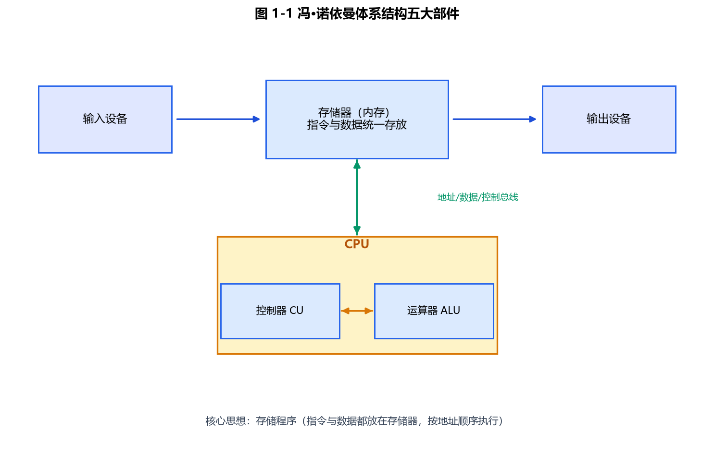
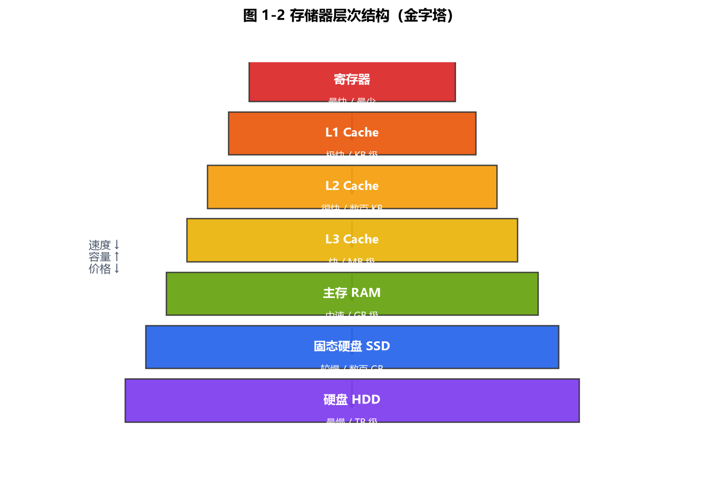

第1章 计算机基础知识
本章定位（CSP-S）：在 CSP-J 的"常识记忆"基础上，进一步理解计算机系统的工作原理、层次结构与性能度量。初赛常考人物/事件/分类的辨析，复赛虽不直接考本章，但存储层次、局部性、调度等思想会直接影响你的代码性能与对评测机的理解。
1.1 计算机发展历史
1.1.1 四代计算机
按主要元器件划分：
| 代数 | 年份 | 主要元器件 | 代表机型 | 特点 |
|---|---|---|---|---|
| 第一代 | 1946—1958 | 电子管 | ENIAC、EDVAC | 体积大、功耗高、用机器语言、可靠性差 |
| 第二代 | 1959—1964 | 晶体管 | IBM 7090 | 体积减小、出现高级语言（FORTRAN、COBOL）、有了操作系统雏形 |
| 第三代 | 1965—1970 | 中小规模集成电路 | IBM 360 | 多道程序、分时系统、系列兼容 |
| 第四代 | 1971—至今 | 大规模/超大规模集成电路 | 各类微处理器计算机 | 个人计算机、网络、移动计算、人工智能 |
示例：微型计算机的问世直接归因于**（超）大规模集成电路**的出现（第四代），而非晶体管或电子管。
1.1.2 摩尔定律
Intel 创始人戈登·摩尔（Gordon Moore）提出：当价格不变时，集成电路上可容纳的晶体管数目约每 18~24 个月翻一番，性能也约提升一倍。
示例：1971 年的 Intel 4004 约含 2300 个晶体管；2020 年的 Apple M1 约含 160 亿个。按每 2 年翻倍粗略估算，约经历 29 个翻倍周期，对应约 58 年，与实际时间线基本吻合。
1.2 AI 历史与代表人物
CSP-S 初赛偶尔以"科技常识"形式出现，以下人物与事件建议识记。
| 人物 | 国籍/身份 | 主要贡献 |
|---|---|---|
| 艾伦·图灵（Alan Turing） | 英国数学家 | 图灵机模型（1936）、图灵测试（1950）、破译 Enigma |
| 约翰·冯·诺依曼（John von Neumann） | 美籍匈牙利数学家 | 存储程序原理、EDVAC 设计 |
| 约翰·麦卡锡（John McCarthy） | 美国科学家 | 1956 达特茅斯会议提出"人工智能"术语，发明 LISP |
| 马文·明斯基（Marvin Minsky） | 美国科学家 | 神经网络、框架理论 |
| 赫伯特·西蒙（Herbert Simon） | 美国 | 逻辑理论家程序、同时获诺贝尔奖与图灵奖 |
| 杰弗里·辛顿（Geoffrey Hinton） | 加拿大/英 | 反向传播、深度学习，2018 图灵奖、2024 诺贝尔物理学奖 |
| 杨立昆（Yann LeCun） | 法国/美 | CNN、2018 图灵奖 |
| 约书亚·本吉奥（Yoshua Bengio） | 加拿大 | 深度学习，2018 图灵奖 |
关键事件时间线：1956 达特茅斯会议（AI 诞生）→ 1997 深蓝击败卡斯帕罗夫 → 2012 AlexNet 引爆深度学习 → 2016 AlphaGo → 2022 ChatGPT。
注意：图灵提出的是"图灵机"这一理论计算模型，并非第一台电子计算机；第一台电子数字计算机是 1946 年的 ENIAC。
1.3 计算机分类
1.3.1 按规模与性能
- 巨型机（超级计算机）：如中国"银河""神威·太湖之光"，用于气象、核模拟等。
- 大型机：银行、航空订票等核心交易系统。
- 小型机 / 工作站：部门级服务器、科学计算站。
- 微型机：个人计算机（PC）、笔记本、嵌入式设备。
1.3.2 按用途
- 通用计算机：能运行各类程序。
- 专用计算机：为特定任务设计（如 DSP、嵌入式控制器）。
1.3.3 按处理对象
- 数字计算机：处理离散数字量（绝大多数计算机）。
- 模拟计算机：处理连续物理量。
- 混合计算机：二者结合。
1.3.4 Flynn 分类法（按指令流/数据流）
| 类型 | 含义 | 典型 |
|---|---|---|
| SISD | 单指令流单数据流 | 传统单核 CPU |
| SIMD | 单指令流多数据流 | 向量机、GPU、CPU 的 SSE/AVX 指令 |
| MISD | 多指令流单数据流 | 少见（如容错系统） |
| MIMD | 多指令流多数据流 | 多核 CPU、多处理机 |
示例：GPU 做矩阵加法时，一条"加"指令同时作用于大量数据元素，属于 SIMD；你电脑的多核 CPU 同时跑不同程序，属于 MIMD。
1.4 计算机应用
主要应用领域：
- 科学计算（数值计算）：天气预报、流体力学仿真。
- 数据处理：数据库、办公自动化（OA）。
- 过程控制（自动控制）：工业生产线、机器人。
- 计算机辅助：CAD（设计）、CAM（制造）、CAI（教学）。
- 人工智能：识别、博弈、生成式模型。
- 网络通信与信息系统：互联网、物联网。
1.5 计算机系统组成
一个完整计算机系统 = 硬件系统 + 软件系统。
1.5.1 硬件五大部件（冯·诺依曼）
运算器、控制器、存储器、输入设备、输出设备。
易错点："主机" = CPU + 主存储器（内存），不包括硬盘、显示器、键盘等外设。硬盘属于"外存"，归为 I/O 设备范畴。

图 1-1：冯·诺依曼体系结构——五大部件通过系统总线连接，核心思想是"存储程序"。
1.5.2 软件系统
- 系统软件：操作系统、编译器、数据库管理系统（DBMS）。
- 应用软件：办公软件、游戏、行业软件。
1.6 冯·诺依曼体系结构
1.6.1 核心思想
- 存储程序：指令与数据都以二进制形式存放在同一存储器中，计算机自动按顺序取指执行。
- 二进制表示：一切信息用 0/1 表示。
- 顺序执行：由程序计数器（PC）指明下一条指令地址。
1.6.2 冯·诺依曼瓶颈
CPU 与存储器之间的带宽限制了性能——CPU 算得快，但"取指令/取数据"的速度跟不上。现代计算机用多级缓存（Cache）和以存储器为核心的结构来缓解。
1.6.3 示例：用 C++ 模拟"存储程序"计算机
下面用一段极简代码演示"指令和数据放在同一块内存"这一核心特征：
#include <iostream>
#include <vector>
using namespace std;
// 极简存储程序计算机：内存 mem[] 同时存放"指令"和"数据"
// 每条指令占 2 个单元：[操作码] [操作数地址]
// 操作码: 0=LOAD 1=ADD 2=STORE 3=HALT
int main() {
vector<int> mem(16, 0);
// ---- 程序区（地址 0~7，共 4 条指令）----
mem[0] = 0; mem[1] = 8; // LOAD mem[8]
mem[2] = 1; mem[3] = 9; // ADD mem[9]
mem[4] = 2; mem[5] = 10; // STORE mem[10]
mem[6] = 3; mem[7] = 0; // HALT
// ---- 数据区（地址 8~9，结果写到 10）----
mem[8] = 3; mem[9] = 5;
int acc = 0, pc = 0;
while (true) {
int op = mem[pc];
int arg = mem[pc + 1];
pc += 2;
if (op == 0) acc = mem[arg]; // LOAD
else if (op == 1) acc += mem[arg]; // ADD
else if (op == 2) mem[arg] = acc; // STORE
else break; // HALT
}
cout << "3 + 5 = " << mem[10] << endl; // 输出: 3 + 5 = 8
return 0;
}
运行结果：3 + 5 = 8。注意程序本身（指令）和数据（3、5）都存放在同一块 mem 中——这正是"存储程序"的体现。
1.7 计算机硬件系统（CSP-S 深化）
1.7.1 CPU 组成与指令周期
CPU 包含：运算器（ALU、累加器、状态寄存器）、控制器（PC、IR、译码器、时序逻辑）、寄存器组、片内 Cache。
一条指令的典型执行阶段：取指(IF) → 译码(ID) → 执行(EX) → 访存(MEM) → 写回(WB)。
1.7.2 存储器层次结构
速度由快到慢、容量由小到大、成本由高到低：
寄存器 > L1 Cache > L2 Cache > L3 Cache > 主存(RAM) > 辅存(SSD/HDD)
(1ns内) (~1ns) (~3ns) (~10ns) (~100ns) (~ms)
- Cache—主存层次解决"速度"矛盾，依赖局部性原理。
- 主存—辅存层次解决"容量"矛盾，即虚拟存储技术。

图 1-2：存储器层次结构金字塔——越往上越快越贵容量越小，Cache 利用局部性弥合 CPU 与主存的速度差。
局部性原理：
- 时间局部性：刚访问过的指令/数据很可能再次访问（如循环变量）。
- 空间局部性：访问某地址时，其邻近地址很可能也被访问（如数组顺序遍历）。
示例：行优先 vs 列优先访问（C++17）
#include <iostream>
#include <chrono>
#include <vector>
using namespace std;
int main() {
const int N = 2000;
vector<vector<int>> a(N, vector<int>(N, 1));
volatile long long sum = 0;
auto t0 = chrono::high_resolution_clock::now();
for (int i = 0; i < N; ++i) // 行优先：内层连续访问
for (int j = 0; j < N; ++j)
sum += a[i][j];
auto t1 = chrono::high_resolution_clock::now();
for (int j = 0; j < N; ++j) // 列优先：跨行跳步访问
for (int i = 0; i < N; ++i)
sum += a[i][j];
auto t2 = chrono::high_resolution_clock::now();
auto row = chrono::duration_cast<chrono::milliseconds>(t1 - t0).count();
auto col = chrono::duration_cast<chrono::milliseconds>(t2 - t1).count();
cout << "行优先: " << row << " ms, 列优先: " << col << " ms\n";
return 0;
}
结论：列优先明显更慢。竞赛中遍历二维数组务必行优先（外层 i、内层 j），这是空间局部性的直接应用。
1.7.3 总线
- 数据总线：传送数据，位数=一次传送的数据宽度。
- 地址总线：传送地址，位数决定寻址空间。
- 控制总线：传送控制信号（读/写、中断等）。
示例：32 位地址总线 → 最大寻址空间 = 2³² 字节 = 4 GB。64 位地址总线理论上可达 2⁶⁴ 字节（实际受芯片限制远小于此）。
1.7.4 输入 / 输出
I/O 接口负责速度匹配与格式转换；中断让外设被动通知 CPU，**DMA（直接存储器访问）**让外设在 CPU 不参与时直接读写内存，减轻 CPU 负担。
1.8 操作系统核心概念（CSP-S 深化）
1.8.1 进程与线程
- 进程：资源分配的基本单位，拥有独立地址空间。
- 线程：CPU 调度的基本单位，同一进程内线程共享内存。
- 并发 vs 并行：并发是"交替推进"（单核也可），并行是"同时执行"（多核）。
1.8.2 进程调度
常见算法：FCFS（先来先服务）、SJF（短作业优先）、RR（时间片轮转）、优先级调度。
衡量指标：周转时间 = 完成时间 − 到达时间；平均周转时间越小越好。
示例：FCFS 与 SJF 调度对比（C++17）
#include <iostream>
#include <vector>
#include <algorithm>
using namespace std;
struct Job { int id, arrive, need; };
int main() {
// 假设 4 个作业均在 0 时刻到达
vector<Job> jobs = {{1,0,5},{2,0,3},{3,0,8},{4,0,2}};
int n = jobs.size();
// FCFS：按提交顺序
double fcfs = 0; long long t = 0;
for (auto& j : jobs) { t += j.need; fcfs += t - j.arrive; }
fcfs /= n;
// SJF：按需要时间升序
sort(jobs.begin(), jobs.end(), [](Job a, Job b){ return a.need < b.need; });
double sjf = 0; t = 0;
for (auto& j : jobs) { t += j.need; sjf += t - j.arrive; }
sjf /= n;
cout << "FCFS 平均周转: " << fcfs << "\n"; // 11.75
cout << "SJF 平均周转: " << sjf << "\n"; // 8.75
return 0;
}
结论：SJF 平均周转时间更短（短作业优先），这正是"短作业优先"优于"先来先服务"的体现。
1.8.3 虚拟内存与页面置换
主存不足时，操作系统用磁盘扩展逻辑内存（虚拟内存），按页管理。当所需页不在内存（缺页）且内存已满，需淘汰一页。
**LRU（最近最少使用）**是最常用策略：淘汰"最久没被访问"的页。
示例：LRU 缺页次数统计（C++17）
#include <iostream>
#include <list>
#include <unordered_map>
#include <vector>
using namespace std;
// cap: 物理页框数; 返回缺页次数
int lru(const vector<int>& pages, int cap) {
list<int> q; // 前端=最近使用, 后端=最久未用
unordered_map<int, list<int>::iterator> pos;
int miss = 0;
for (int p : pages) {
auto it = pos.find(p);
if (it == pos.end()) { // 缺页
if ((int)q.size() == cap) { // 满了，淘汰队尾
pos.erase(q.back());
q.pop_back();
}
++miss;
} else {
q.erase(it->second); // 命中，移到前端
}
q.push_front(p);
pos[p] = q.begin();
}
return miss;
}
int main() {
vector<int> pages = {1,2,3,1,4,2,5,1,2,3};
cout << "容量=3 时缺页次数: " << lru(pages, 3) << endl; // 输出 9
return 0;
}
竞赛提示：LRU 思想也常用于"手写 LRU 缓存"（如用
list+unordered_map，如上），是高频面试题；CSP-S 复赛不直接考，但理解它对优化程序很有帮助。
1.8.4 文件系统
文件按目录树组织，路径分绝对路径（从根开始）与相对路径（从当前目录开始）。
示例：当前目录为 /home/user，../data/a.txt 表示 /home/data/a.txt（.. 指上级目录）。
1.8.5 死锁
多个进程互相持有对方所需资源而僵持。四个必要条件同时成立才会死锁：互斥、占有并等待、不可抢占、循环等待。破坏任一条件即可预防死锁（如资源按序申请破坏"循环等待"）。
1.9 计算机性能指标
| 指标 | 含义 | 备注 |
|---|---|---|
| 主频 | CPU 时钟频率（GHz） | 主频高不一定快，还需看 IPC |
| 字长 | 一次处理数据的位数（32/64 位） | |
| MIPS | 每秒百万条指令 | MIPS = 指令数 / (执行秒数 × 10^6) |
| FLOPS | 每秒浮点运算次数 | 超算常用 |
| CPI | 平均每条指令的时钟周期数 | CPU时间 = 指令数 × CPI / 主频 |
| 存储容量 | 字节数 | |
| 带宽 | 单位时间传输数据量 | 带宽 = 总线位宽 × 总线频率 |
易错点：厂商标称容量用 10³ 进制（1 TB = 10¹² B），操作系统用 2¹⁰ 进制（1 TiB = 2⁴⁰ B）。所以"1 TB 硬盘"在系统里约显示 931 GiB。
示例：性能与容量换算（C++17）
#include <iostream>
using namespace std;
int main() {
// 1) 寻址空间：32 位地址总线
long long space = 1LL << 32; // 字节
cout << "32位地址总线寻址空间: "
<< space / (1024LL*1024*1024) << " GB\n"; // 4 GB
// 2) 标称 1TB 实际可用（2^10 进制）
long long disk = 1'000'000'000'000LL; // 10^12 B
cout << "标称1TB约: "
<< disk / (1024LL*1024*1024) << " GiB\n"; // 约 931 GiB
// 3) MIPS：10^9 条指令在 2 秒内完成
double mips = 1e9 / (2.0 * 1e6);
cout << "MIPS = " << mips << "\n"; // 500
return 0;
}
1.10 本章小结（CSP-S 考查要点）
- 必记人物：图灵（图灵机/图灵奖）、冯·诺依曼（存储程序）、摩尔（摩尔定律）、麦卡锡（AI 术语）。
- 必辨概念：主机 = CPU + 内存；四代元器件；Flynn 四类；进程 vs 线程；死锁四条件。
- 性能计算：寻址空间 = 2 的地址总线位数次方、MIPS、容量 10³ vs 2¹⁰ 换算。
- 思想迁移：局部性原理（写快代码）、存储层次（理解缓存）、调度（理解并发）——这些会在后续算法与复赛优化中反复用到。
随堂检测（CSP-S 风格）
提示：每道题下方都有「参考答案」折叠块，点击即可展开答案与解析。
-
（单选）以下关于"主机"的说法正确的是（ ）
- A. 主机包括 CPU、内存和硬盘
- B. 主机包括 CPU 和内存
- C. 主机包括 CPU、显示器和键盘
- D. 主机就是 CPU
参考答案
答案：B
解析（考点）：计算机"主机" = CPU + 主存储器（内存）。硬盘属于外存、显示器/键盘属于 I/O 外设，都不计入主机。这是 CSP 初赛高频易错点。
-
（单选）32 位地址总线的计算机最大寻址空间是（ ）
- A. 32 MB
- B. 4 GB
- C. 32 GB
- D. 16 GB
参考答案
答案：B
解析（考点）：寻址空间 = 2 的地址总线位数次方 字节 = 2³² B = 4 GB。地址总线位数直接决定可访问的内存上限。
-
（单选）遍历一个
int a[N][N]二维数组，下列哪种方式缓存更友好（ ）- A.
for j for i a[i][j] - B.
for i for j a[i][j] - C. 二者相同
- D. 无法确定
参考答案
答案：B
解析（考点）：行优先
a[i][j]是连续访问，充分利用空间局部性，缓存命中率高、速度快；列优先跨行跳步访问，缓存不友好。 - A.
-
（多选）死锁产生的必要条件包括（ ）
- A. 互斥
- B. 占有并等待
- C. 不可抢占
- D. 循环等待
参考答案
答案：A、B、C、D
解析（考点）：死锁的四个必要条件——互斥、占有并等待、不可抢占、循环等待——必须同时成立才会死锁；破坏其中任意一个即可预防死锁（如资源按序申请破坏"循环等待"）。
-
（单选）某计算机地址总线为 20 位，其最大寻址空间是（ ）
- A. 20 MB
- B. 1 MB
- C. 20 KB
- D. 64 KB
参考答案
答案：B
解析（考点）：最大寻址空间 = 2²⁰ 字节 = 1 MB。注意区分"地址总线位数"与"寻址空间大小"，二者是指数关系而非倍数关系。
-
（单选）GPU 对大量数据同时执行同一条加法指令，按 Flynn 分类法属于（ ）
- A. SISD
- B. SIMD
- C. MISD
- D. MIMD
参考答案
答案：B
解析（考点）：一条指令（加）同时作用于多个数据元素 = 单指令流多数据流（SIMD）。GPU 的向量/矩阵运算即典型 SIMD；多核 CPU 同时跑不同程序则属 MIMD。